library(tidyverse)
library(ggplot2)
library(stringr)
library(fuzzyjoin)
library(knitr)
library(kableExtra)
library(reshape2)Exploratory Data Analysis and Data Visualization on US Military Airstrikes in Yemen
This is the code for a group project I completed with my Statistical Consulting class. We used drone data from The Guardian that detailed the type of attack and the number of casualties in Yemen from 2002 - present. We formed 3 hypothesis relating to presidential administrations, death vs strike count, and location. In this report, I display the graphs my group and I used and what we learned from them.
Download Libraries
Exploratory Data Analysis (EDA) and Data Cleaning
Read in Data
yemen <- read.csv("yemen.csv")[1:324,]
head(yemen) Strike.ID Date Location Province
1 YEM001 03/11/2002 Unknown Marib
2 YEM002 17/12/2009 Al Majala Abyan
3 YEM003 17/12/2009 Arhab Sanaa
4 YEM004 24/12/2009 Rafd Shabwa
5 YEM005 12/01/2010 Unknown Shabwa
6 YEM006 15/01/2010 Al Ajashir Saada
Type.of.attack
1 Drone strike
2 Cruise missile strike
3 US-Yemen ground operation\nPossible drone strike
4 Airstrike\nPossible cruise missile strike
5 Yemen ground operation\nPossible US assistance
6 Airstrike
Confirmed..possible.US.attack. Air.operation. Drone.strike
1 Confirmed 1 1
2 Confirmed 0 0
3 Confirmed 0 0
4 Confirmed 1 0
5 Possible 0 0
6 Possible 1 0
Minimum.number.of.strikes Maximum.number.of.strikes Minimum.people.killed
1 1 1 6
2 1 1 55
3 1 1 0
4 1 1 30
5 1 1 1
6 1 1 0
Maximum.people.killed Minimum.civilians.reported.killed
1 6 0
2 58 44
3 0 0
4 34 0
5 2 0
6 6 0
Maximum.civilians.reported.killed Minimum.children.reported.killed
1 0 0
2 44 21
3 0 0
4 0 0
5 0 0
6 0 0
Maximum.children.reported.killed Minimum.people.injured
1 0 0
2 22 9
3 0 0
4 0 0
5 0 0
6 0 0
Maximum.people.injured Strike.link X
1 0 YEM001
2 9 YEM002
3 0 YEM003
4 0 YEM004
5 0 YEM005
6 0 YEM006 dim(yemen)[1] 324 20sum(is.na(yemen))[1] 0par(mfrow=c(3,4))
numeric_cols <- colnames(yemen)[9:18]
for (i in numeric_cols) {
yemen[, i] <- as.numeric(as.character(yemen[, i]))
}
ggplot(yemen, aes(x=Minimum.number.of.strikes, y=Maximum.number.of.strikes)) +
geom_point(alpha = 0.3, size = 3, col="blue") +
theme_minimal() +
geom_abline(slope=1,intercept=0, color="darkgrey", linetype="dashed", lwd = 1)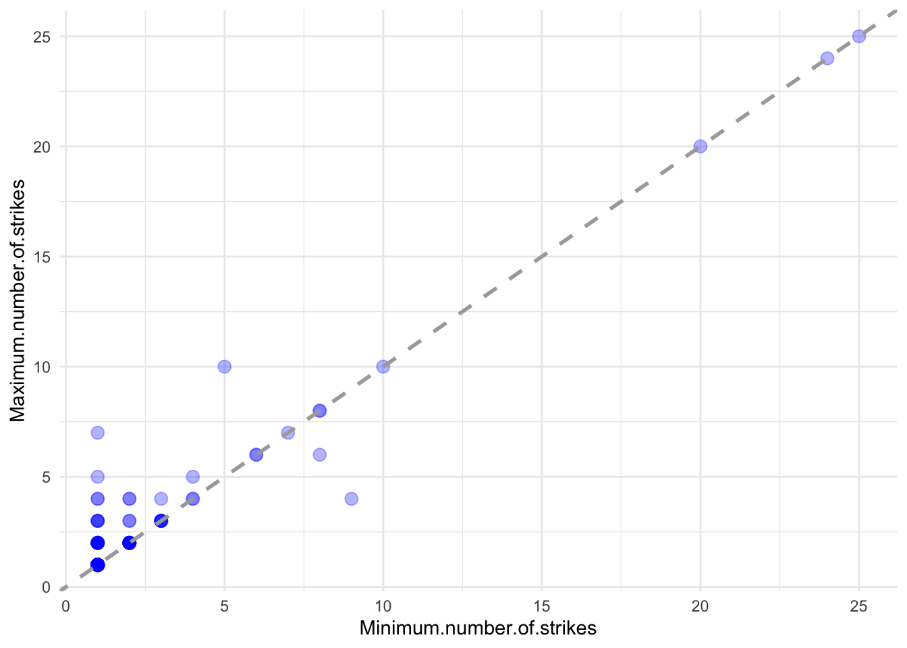
There are 324 data points, 29 variables, and no NA values.
The graph reveals discrepancies between minimum and maximum airstrikes, suggesting data uncertainty. Dots on the dashed line indicate full certainty. The number of strikes nearer to 0 show discrepancies, but the dots farther from 0 show certainty. This could mean that higher strike counts are more reliably recorded compared to lower strike counts.
Data Anomalies
We corrected instances where minimum and maximum ranges were reversed. We then manually fixed misspellings in city and province names. We also creating and edited data frames to simplify our analysis.
yemen %>%
select(Strike.ID, Minimum.number.of.strikes, Maximum.number.of.strikes) %>%
filter(Minimum.number.of.strikes > Maximum.number.of.strikes) Strike.ID Minimum.number.of.strikes Maximum.number.of.strikes
1 YEM266 9 4
2 YEM279 8 6yemen[c(266,279),]$Minimum.number.of.strikes <- c(4,6)
yemen[c(266,279),]$Maximum.number.of.strikes <- c(9,8)# Focuses on presidential term
presidents_by_term <- data.frame(
start_date = seq(as.Date("2001-01-20"), as.Date("2021-01-20"), by = "4 years"),
end_date = seq(as.Date("2005-01-19"), as.Date("2025-01-19"), by = "4 years"),
president = c(
"George W. Bush (1)", "George W. Bush (2)",
"Barack Obama (1)", "Barack Obama(2)",
"Donald Trump",
"Joe Biden"
)
)
presidents_by_term start_date end_date president
1 2001-01-20 2005-01-19 George W. Bush (1)
2 2005-01-20 2009-01-19 George W. Bush (2)
3 2009-01-20 2013-01-19 Barack Obama (1)
4 2013-01-20 2017-01-19 Barack Obama(2)
5 2017-01-20 2021-01-19 Donald Trump
6 2021-01-20 2025-01-19 Joe Biden# adding columns and changing types
yemen <- yemen %>%
mutate(Year = as.numeric(str_sub(Date, start = -4)),
Date = as.Date(yemen$Date, "%d/%m/%Y"),
Average.number.of.strikes = (Minimum.number.of.strikes + Maximum.number.of.strikes)/2,
Average.people.killed = (Minimum.people.killed + Maximum.people.killed)/2,
Average.civilians.reported.killed = (Minimum.civilians.reported.killed + Maximum.civilians.reported.killed)/2,
Average.children.reported.killed = (Minimum.children.reported.killed + Maximum.children.reported.killed)/2,
Average.people.injured = (Minimum.people.injured + Maximum.people.injured)/2,
Year = format(Date, "%Y")) %>%
fuzzy_left_join(presidents_by_term,
by = c("Date" = "start_date", "Date" = "end_date"),
match_fun = list(`>=`,`<=`))
head(yemen) Strike.ID Date Location Province
1 YEM001 2002-11-03 Unknown Marib
2 YEM002 2009-12-17 Al Majala Abyan
3 YEM003 2009-12-17 Arhab Sanaa
4 YEM004 2009-12-24 Rafd Shabwa
5 YEM005 2010-01-12 Unknown Shabwa
6 YEM006 2010-01-15 Al Ajashir Saada
Type.of.attack
1 Drone strike
2 Cruise missile strike
3 US-Yemen ground operation\nPossible drone strike
4 Airstrike\nPossible cruise missile strike
5 Yemen ground operation\nPossible US assistance
6 Airstrike
Confirmed..possible.US.attack. Air.operation. Drone.strike
1 Confirmed 1 1
2 Confirmed 0 0
3 Confirmed 0 0
4 Confirmed 1 0
5 Possible 0 0
6 Possible 1 0
Minimum.number.of.strikes Maximum.number.of.strikes Minimum.people.killed
1 1 1 6
2 1 1 55
3 1 1 0
4 1 1 30
5 1 1 1
6 1 1 0
Maximum.people.killed Minimum.civilians.reported.killed
1 6 0
2 58 44
3 0 0
4 34 0
5 2 0
6 6 0
Maximum.civilians.reported.killed Minimum.children.reported.killed
1 0 0
2 44 21
3 0 0
4 0 0
5 0 0
6 0 0
Maximum.children.reported.killed Minimum.people.injured
1 0 0
2 22 9
3 0 0
4 0 0
5 0 0
6 0 0
Maximum.people.injured Strike.link X Year Average.number.of.strikes
1 0 YEM001 2002 1
2 9 YEM002 2009 1
3 0 YEM003 2009 1
4 0 YEM004 2009 1
5 0 YEM005 2010 1
6 0 YEM006 2010 1
Average.people.killed Average.civilians.reported.killed
1 6.0 0
2 56.5 44
3 0.0 0
4 32.0 0
5 1.5 0
6 3.0 0
Average.children.reported.killed Average.people.injured start_date end_date
1 0.0 0 2001-01-20 2005-01-19
2 21.5 9 2009-01-20 2013-01-19
3 0.0 0 2009-01-20 2013-01-19
4 0.0 0 2009-01-20 2013-01-19
5 0.0 0 2009-01-20 2013-01-19
6 0.0 0 2009-01-20 2013-01-19
president
1 George W. Bush (1)
2 Barack Obama (1)
3 Barack Obama (1)
4 Barack Obama (1)
5 Barack Obama (1)
6 Barack Obama (1)The first data frame clearly labels the start and end date of each presidency they can be easily matched with airstrike data.
The second data frame shows the columns appended to the initial dataset. We added on averages of deaths and injuries calculated from the initial data, and the info from the first data frame.
Hypothesis 1
Ho: There is no difference in the impact and amount of strikes during the first half of each president’s term.
Ha: There is a difference in the impact and amount of strikes during the first half of each president’s term.
# usign the "date" data type
yemen$Date <- as.Date(yemen$Date, format = "%d/%m/%Y")
# sectioning the rows to the match the presidencies
Bush <- yemen[1,]
Obama1 <- yemen[2:119,]
Obama2 <- yemen[120:257,]
Trump <- yemen[258:324,]
# sectioning the first half of each presidency (except Bush)
Obama1_first_half <- Obama1[1:10,]
Obama2_first_half <- Obama2[1:59,]
Trump_first_half <- Trump[1:65,]
# summing up number of strikes, deaths, child deaths, and injuries for the first half of each presidency
first_half_total_strikes <- c(sum(Obama1_first_half$Average.number.of.strikes),
sum(Obama2_first_half$Average.number.of.strikes),
sum(Trump_first_half$Average.number.of.strikes))
first_half_killed <- c(sum(Obama1_first_half$Average.people.killed),
sum(Obama2_first_half$Average.people.killed),
sum(Trump_first_half$Average.people.killed))
first_half_children <- c(sum(Obama1_first_half$Average.children.reported.killed),
sum(Obama2_first_half$Average.children.reported.killed),
sum(Trump_first_half$Average.children.reported.killed))
first_half_injured <- c(sum(Obama1_first_half$Average.people.injured),
sum(Obama2_first_half$Average.people.injured),
sum(Trump_first_half$Average.people.injured))
# combining and labeling
firstYears <- rbind(first_half_children,first_half_injured, first_half_total_strikes,first_half_killed)
rownames(firstYears) <- c('Children Killed','People Injured','Total Strikes','People Killed')
colnames(firstYears) <- c('Obama (Term 1 - 2009)', 'Obama (Term 2 - 2013)', 'Trump (2017)')Barplot of totals for injuries, people and children killed and strikes
barplot(firstYears, legend.text = rownames(firstYears),
beside = TRUE, col = c('skyblue','cyan3','royalblue','darkblue'),
args.legend = list(x='topleft'),
ylab = 'Totals',xlab = 'President Term',
main = 'Total Kills, Injuries and Strikes During First Half of Presidential Term')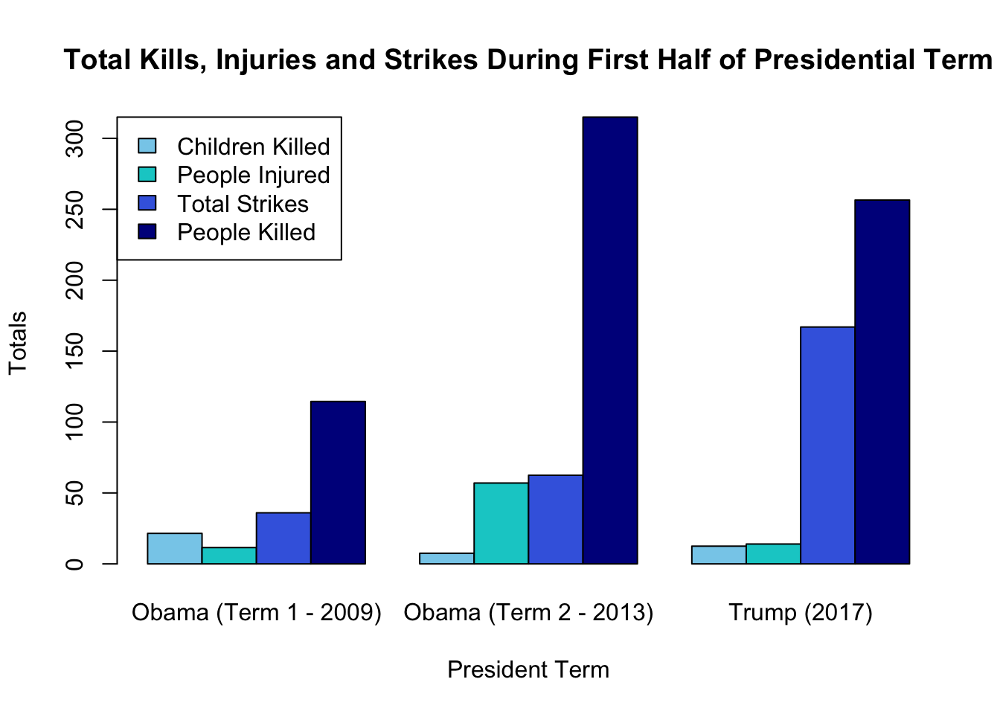
From the plot, we can reveal some patterns:
Children Killed: Obama 2 < Trump < Obama 1
People Injured: Obama 1 < Trump < Obama 2
Total Strikes: Obama 1 < Obama 2 < Trump
People Killed: Obama 1 < Trump < Obama 2
Boxplot for Strikes and People Killed (1st Half of Terms)
#Boxplot of people killed in each individual strike logged
Strikes <- list(Obama_2009_2010 = Obama1_first_half$Average.number.of.strikes,
Obama_2013_2014 = Obama2_first_half$Average.number.of.strikes,
Trump_2017_2018 = Trump_first_half$Average.number.of.strikes)
boxplot(Strikes, col = 'orchid4', main = 'Average Strike Count by Presidential Term',
xlab = "Presidential Term", ylab = "Average Strike Count Per Attack")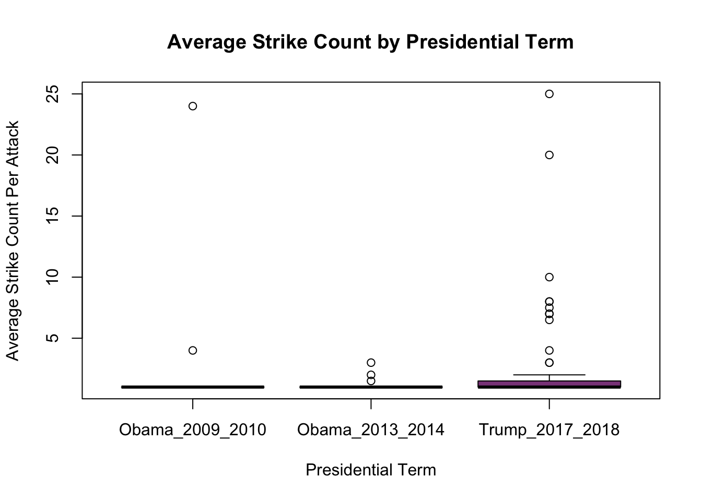
#Boxplot of people killed in each individual strike logged
Killed <- list(Obama_2009_2010 = Obama1_first_half$Average.people.killed,
Obama_2013_2014 = Obama2_first_half$Average.people.killed,
Trump_2017_2018 = Trump_first_half$Average.people.killed)
boxplot(Killed, col = 'orchid4', main = 'Average People Killed Per Strike by Presidential Term',
xlab = "Presidential Term", ylab = "Average People Killed Per Attack")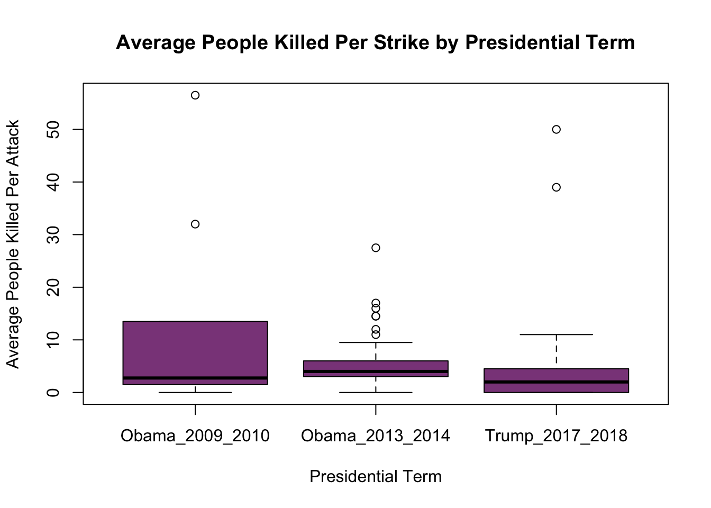
ANOVA for Strikes in Full Dataset
by_avg_strike_count <- aov(Average.number.of.strikes ~ factor(president), data = yemen)
TukeyHSD(by_avg_strike_count) Tukey multiple comparisons of means
95% family-wise confidence level
Fit: aov(formula = Average.number.of.strikes ~ factor(president), data = yemen)
$`factor(president)`
diff lwr upr p adj
Barack Obama(2)-Barack Obama (1) -0.44030951 -1.1960679 0.3154489 0.4358948
Donald Trump-Barack Obama (1) 1.05887933 0.1368367 1.9809219 0.0170278
George W. Bush (1)-Barack Obama (1) -0.53813559 -6.5912099 5.5149387 0.9957285
Donald Trump-Barack Obama(2) 1.49918884 0.6016701 2.3967075 0.0001254
George W. Bush (1)-Barack Obama(2) -0.09782609 -6.1472133 5.9515611 0.9999738
George W. Bush (1)-Donald Trump -1.59701493 -7.6694178 4.4753880 0.9049479ANOVA for People Killed in Full Dataset
by_avg_ppl_count <- aov(Average.people.killed ~ factor(president), data = yemen)
TukeyHSD(by_avg_ppl_count) Tukey multiple comparisons of means
95% family-wise confidence level
Fit: aov(formula = Average.people.killed ~ factor(president), data = yemen)
$`factor(president)`
diff lwr upr p adj
Barack Obama(2)-Barack Obama (1) -2.8637313 -5.235218 -0.4922442 0.0106317
Donald Trump-Barack Obama (1) -3.7190741 -6.612343 -0.8258053 0.0055242
George W. Bush (1)-Barack Obama (1) -1.5847458 -20.578630 17.4091390 0.9964608
Donald Trump-Barack Obama(2) -0.8553429 -3.671658 1.9609727 0.8615358
George W. Bush (1)-Barack Obama(2) 1.2789855 -17.703330 20.2613006 0.9981247
George W. Bush (1)-Donald Trump 2.1343284 -16.920208 21.1888643 0.9915557ANOVA for Strikes in 1st Half of Presidency (2009-2020)
AveKilled <- c(Obama1_first_half$Average.people.killed,
Obama2_first_half$Average.people.killed,
Trump_first_half$Average.people.killed)
AveStrike <- c(Obama1_first_half$Average.number.of.strikes,
Obama2_first_half$Average.number.of.strikes,
Trump_first_half$Average.number.of.strikes)
pres <- c(rep('Obama1',10),rep('Obama2',59),rep('Trump',65))
anovaStrike <- aov(AveStrike ~ pres)
summary(anovaStrike) Df Sum Sq Mean Sq F value Pr(>F)
pres 2 98.8 49.41 4.052 0.0196 *
Residuals 131 1597.4 12.19
---
Signif. codes: 0 '***' 0.001 '**' 0.01 '*' 0.05 '.' 0.1 ' ' 1TukeyHSD(anovaStrike) Tukey multiple comparisons of means
95% family-wise confidence level
Fit: aov(formula = AveStrike ~ pres)
$pres
diff lwr upr p adj
Obama2-Obama1 -2.540678 -5.37164560 0.2902897 0.0882111
Trump-Obama1 -1.030769 -3.84273687 1.7811984 0.6607610
Trump-Obama2 1.509909 0.02135498 2.9984625 0.0459835ANOVA for Average People Killed in 1st Half of Presidency (2009-2020)
anovaKilled <- aov(AveKilled ~ pres)
summary(anovaKilled) Df Sum Sq Mean Sq F value Pr(>F)
pres 2 493 246.54 3.892 0.0228 *
Residuals 131 8298 63.34
---
Signif. codes: 0 '***' 0.001 '**' 0.01 '*' 0.05 '.' 0.1 ' ' 1TukeyHSD(anovaKilled) Tukey multiple comparisons of means
95% family-wise confidence level
Fit: aov(formula = AveKilled ~ pres)
$pres
diff lwr upr p adj
Obama2-Obama1 -6.111017 -12.563362 0.3413278 0.0674716
Trump-Obama1 -7.503846 -13.912886 -1.0948062 0.0172602
Trump-Obama2 -1.392829 -4.785543 1.9998843 0.5950497We can see that, at a 0.05 significance level, there is evidence to suggest a difference in the average people killed per strike over the different presidential terms. Thus, rejecting our null hypothesis.
Specifically, the Tukey Test shows a significant difference between Trump and Obama’s First Term. During the first two years of each term, strikes on average killed more people during Obama’s term in 2009-2010 than Trump’s in 2017-2018.
There was not a significance difference for average people killed per strike between Obama’s two terms and Obama’s second term and Trump’s.
We can see the highest number of strikes occurred early in Trump’s term compared to Obama’s terms. Yet, when we compare how many people were killed per strike, Obama’s first term produced a higher average.
Time Series Plots of Number of Strikes and People Killed
suppressWarnings({
g <-ggplot(yemen[2:324,],
aes(x = Date, y = Average.number.of.strikes, fill = president)) +
geom_bar(stat = 'identity', width = 4) +
scale_fill_manual(
values = c('forestgreen','firebrick','darkblue'),
labels = c('Obama Term 1','Obama Term 2','Trump'))+
labs(title = 'Total Strikes From 2009-2020',
x = 'Date',
y = 'Total Strikes',
fill = 'President')+
theme_light()
print(g)
})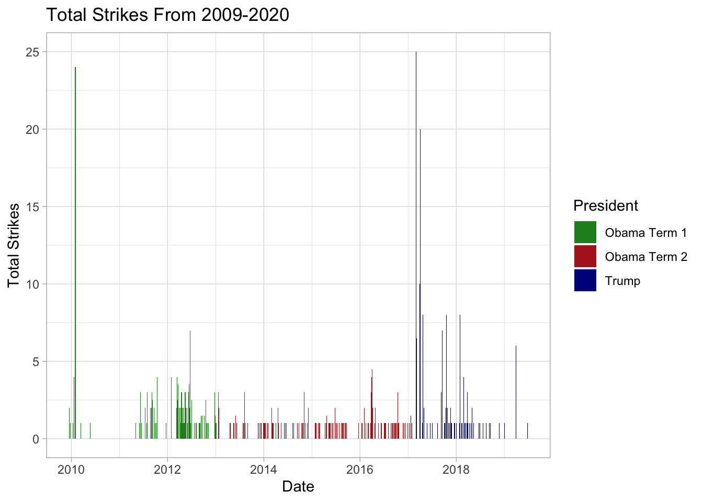
suppressWarnings({
g<-ggplot(yemen[2:324,],
aes(x = Date, y = Average.people.killed, fill = president)) +
geom_bar(stat = 'identity', width = 3) +
scale_fill_manual(
values = c('forestgreen','firebrick','darkblue'),
labels = c('Obama Term 1','Obama Term 2','Trump'))+
labs(title = 'Total Killed From 2009-2020',
x = 'Date',
y = 'Total People Killed',
fill = 'President')+
theme_light()
print(g)
})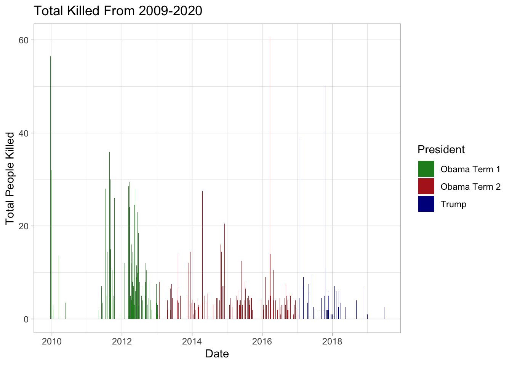
The time series plots include all of the available data in the Yemen drone strike dataset (up until 06/24/2019).
We can see a massive spike in strikes when Donald Trump took office. Similarly, we can see a large spike early in Obama’s first term.
For people killed per strike, we see a negative trend throughout Obama’s first term but a slight positive trend in his second term. Trump’s strikes had many deaths in 2017-2018.
In further studies, we could complete the time series from the full terms of each president to see the final trends.
Hypothesis 2
Ho: There is no difference in the impact and amount of strikes year-to-year.
Ha: There is a difference in the impact and amount of strikes year-to-year.
Min and Max number of strikes per year
strike_by_year <- yemen %>%
group_by(Year) %>%
summarise(max_strikes = sum(Maximum.number.of.strikes),
min_strikes = sum(Minimum.number.of.strikes),
avg_strikes = sum(Average.number.of.strikes))
ggplot(strike_by_year, aes(x = Year)) +
geom_segment(aes(xend = Year, y = min_strikes, yend = max_strikes), color = "grey", lwd = 1.5) +
geom_point(aes(y = min_strikes), color = "blue", size = 3) +
geom_point(aes(y = max_strikes), color = "red", size = 3) +
theme_minimal() +
labs(title = "Estimated Strikes Per Year",
x = "Year",
y = "Strike Range (Min to Max)") +
theme(axis.text.x = element_text(angle = 45, hjust = 1)) 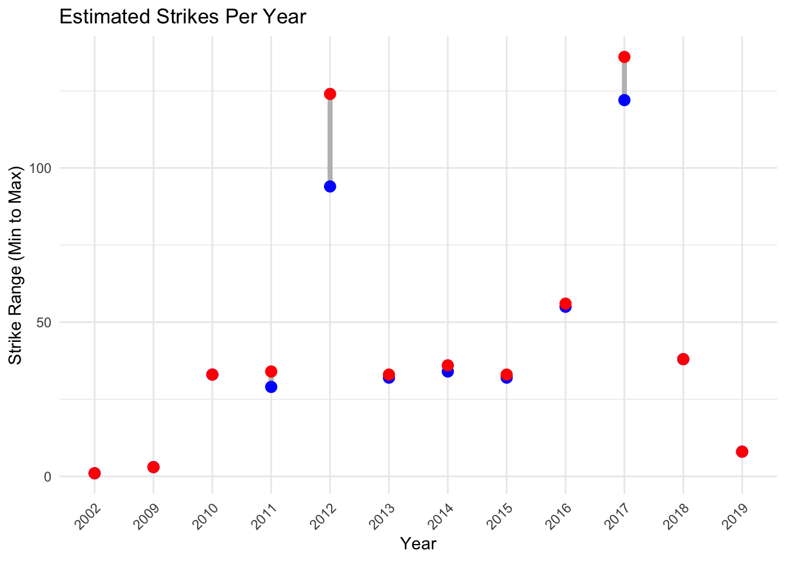
This graph shows the minimum (blue) and maximum (red) strikes per year. The highest are in 2012 (end of Obama’s first term) and 2017 (beginning of Trump’s term).
Min and Max people killed per year
victim_by_year <- yemen %>%
group_by(Year) %>%
summarise(max_count = sum(Maximum.people.killed),
min_count = sum(Minimum.people.killed),
avg_count = sum(Average.people.killed))
ggplot(victim_by_year, aes(x = Year)) +
geom_segment(aes(xend = Year, y = min_count, yend = max_count), color = "grey", lwd = 1.5) +
geom_point(aes(y = min_count), color = "darkblue", size = 4.5) +
geom_point(aes(y = max_count), color = "darkred", size = 4.5) +
theme_minimal() +
labs(title = "Estimated People Killed Per Year",
x = "Year",
y = "Victim Count Range (Min to Max)") +
theme(axis.text.x = element_text(angle = 45, hjust = 1)) 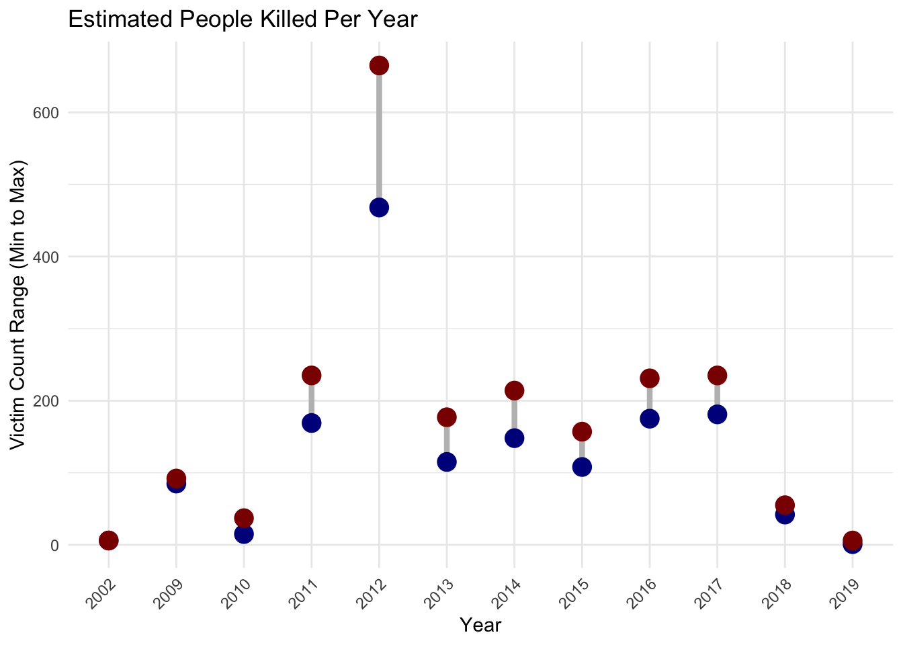
Here, you can see the minimum and maximum people killed per year. While 2012 shows a high strike count and death count, 2017 does not, as the number of deaths in 2017 is not much higher that the average throughout the years.
Time series of type of victim per year
yemen$Year <- as.numeric(yemen$Year)
data2 <- yemen %>%
select(Year, Average.people.killed, Average.civilians.reported.killed, Average.children.reported.killed, Average.number.of.strikes) %>%
filter(Year > 2002) %>%
group_by(Year) %>%
summarise(`People Killed` = sum(Average.people.killed),
`Civilians Killed` = sum(Average.civilians.reported.killed),
`Children Killed` = sum(Average.children.reported.killed))
data_long2 <- melt(data2, id.vars = "Year",
variable.name = "Metric",
value.name = "Value")
ggplot(data_long2, aes(x = Year, y = Value, color = Metric)) +
geom_line(size = 1) +
geom_point(size = 2) +
labs(
title = "Estimated Total Victims By Type Per Year (2009-2019)",
x = "Year",
y = "Estimated Total",
color = "Victim Type"
) +
theme_minimal() +
theme(
text = element_text(size = 12),
plot.title = element_text(hjust = 0.5)
) +
scale_x_continuous(breaks = seq(min(yemen$Year), max(yemen$Year), by = 1)) +
theme(
axis.text.x = element_text(angle = 45, hjust = 1),
plot.title = element_text(hjust = 0.5),
panel.grid.minor.x = element_blank(),
panel.grid.major.x = element_blank()
)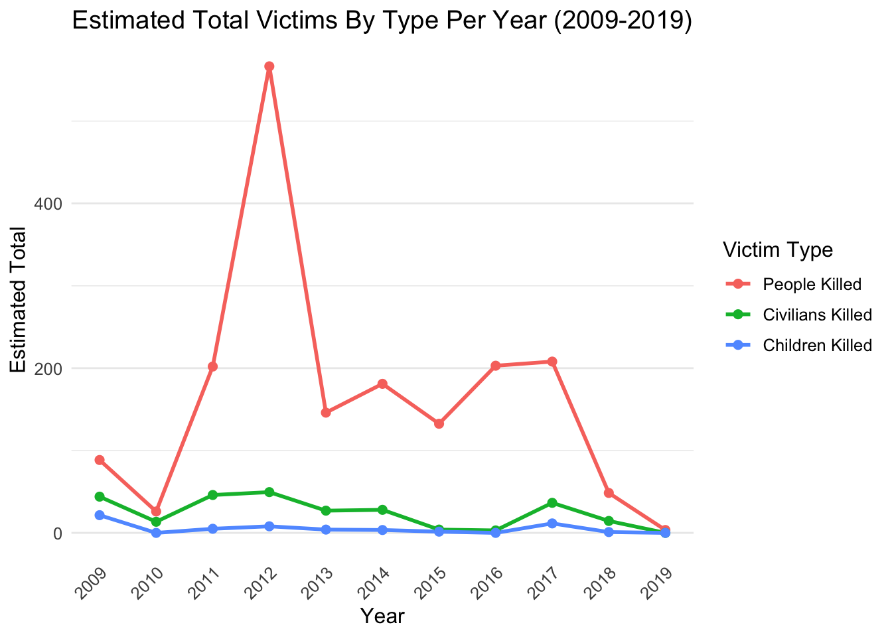
Looking at the year-to-year impact of strikes, you can see a spike in casualties in 2012, which lines up with the higher number of strikes that year. This suggests that more strikes generally lead to more deaths.
But 2017 is an exception — despite more strikes, the number of people killed didn’t increase much, possibly indicating less effective attacks.
Civilian and child casualties, while smaller overall, also peaked in 2012 and 2017. Interestingly, 2012 seemed to have had more “successful” strikes, with fewer civilian casualties compared to militant targets.
Time Series of Average Victims By Per Atack By Type Per Year
data3 <- yemen %>%
filter(Year > 2002) %>%
select(Year, Average.people.killed, Average.civilians.reported.killed, Average.children.reported.killed, Average.number.of.strikes) %>%
group_by(Year) %>%
summarise(`People Killed` = mean(Average.people.killed),
`Civilians Killed` = mean(Average.civilians.reported.killed),
`Children Killed` = mean(Average.children.reported.killed))
data_long3 <- melt(data3, id.vars = "Year",
variable.name = "Metric",
value.name = "Value")
ggplot(data_long3, aes(x = Year, y = Value, color = Metric)) +
geom_line(size = 1) +
geom_point(size = 2) +
labs(
title = "Average Victims By Per Attack By Type Per Year (2009-2019)",
x = "Year",
y = "Estimated Average, Per Record",
color = "Victim Type"
) +
scale_x_continuous(breaks = seq(min(yemen$Year), max(yemen$Year), by = 1))+
theme_minimal() +
theme(
axis.text.x = element_text(angle = 45, hjust = 1),
text = element_text(size = 12),
plot.title = element_text(hjust = 0.5),
panel.grid.minor.x = element_blank(),
panel.grid.major.x = element_blank()
)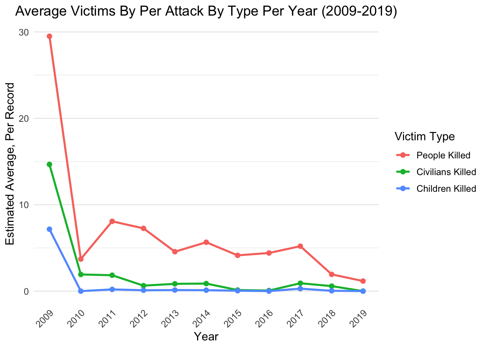
We analyzed average casualties per attack to assess strike efficiency over the years. While 2012 and 2017 saw spikes in strike activity, their average casualties per attack were similar to other years, with a slight downward trend, possibly due to improved tactics in Yemen.
In 2009, with only three recorded attacks, one caused unusually high casualties, skewing the averages. This likely reflects early, incomplete strike documentation.
Overall, 2009 marked high casualties despite few strikes, 2012 saw a surge in strikes with proportionally fewer civilian casualties, and 2017 had more strikes but fewer casualties, suggesting less effective attacks.
Hypothesis 3
Ho: There is no difference in the impact and amount as it relates to location in Yemen.
Ha: There is a difference in the impact and amount as it relates to location in Yemen.
Table of total kills per province
total = yemen %>% group_by(Province) %>% summarise(total_kills = sum(Average.people.killed))
head(total)# A tibble: 6 × 2
Province total_kills
<chr> <dbl>
1 " Bayda" 30.5
2 "-" 0
3 "Abyan" 675
4 "Abyan " 2
5 "Across Yemen" 0
6 "Across central Yemen " 7 Comparative bar chart of civilians vs people killed, for provinces with high strikes
grouped <- aggregate(total_kills ~ Province, data = total, sum)
barplot(grouped$total_kills, names.arg = grouped$Province, main = "Total Average Kills by Province", ylab = "Total Sum", las = 2, srt = 35, cex.names = 0.5, col = "skyblue")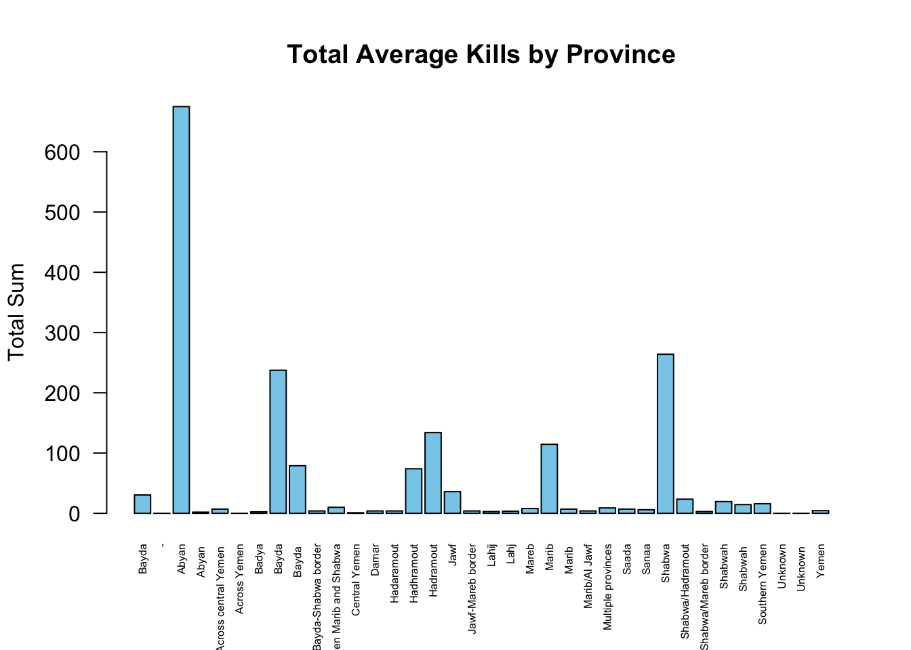
selected <- c("Abyan", "Bayda", "Hadramout", "Marib", "Shabwa")
filtered_data <- yemen[yemen$Province %in% selected, ]
filtered_table = filtered_data %>% group_by(Province) %>% summarise(total_kills = sum(Average.people.killed), civilians_killed = sum(Average.civilians.reported.killed))
filtered_table %>% kable(col.names = c("Province", "People Killed", "Civilians Killed"), caption = "Table of People Killed and Civilians Killed by Province", align = c('l', 'c', 'c')) %>% kable_styling(bootstrap_options = c("striped")) %>% row_spec(0, bold = TRUE, color = "black", background = "white")| Province | People Killed | Civilians Killed |
|---|---|---|
| Abyan | 675.0 | 125.5 |
| Bayda | 237.5 | 65.0 |
| Hadramout | 134.0 | 10.0 |
| Marib | 114.5 | 14.5 |
| Shabwa | 264.0 | 14.5 |
In the barplot entitled “Total Average Kills by Province”, we see that the provinces Abyan, Bayda, Hadramout, Marib, and Shabwa have the most number of kills, while the rest of the provinces see fewer amounts of kills.
The “Table of People Killed and Civilians Killed by Province” implies that while these provinces have a very high number of people killed, most were not civilians.
Conclusion
This analysis examines U.S. drone strikes in Yemen across administrations, regions, and years, highlighting key patterns and implications. Strikes peaked during Trump’s first term, while Obama’s first term saw the highest fatalities per strike. Notable spikes occurred in 2012 and 2017, likely tied to aggressive early-term military strategies and regional unrest. Regions like Abyan experienced the highest casualties, reflecting AQAP activity and counterterrorism focus.
Despite increased strikes in 2012, civilian and child casualties were relatively low, suggesting efforts to minimize collateral damage. However, the analysis is limited by the dataset ending in mid-2019 and a lack of detailed variables like drone type or specific strike goals. Broader influences such as shifts in political power and international dynamics were not fully considered.
The findings highlight the need for more comprehensive research to understand the long-term impacts and driving factors behind U.S. drone operations in Yemen.